lab2/ 目录中，提交包中的图片与报告引用一致。
校园或社区中存在大量闲置物品，但缺少一个受管理的、可追溯的交易信息发布与购买意向撮合渠道。卖家需要低成本发布商品并处理购买意向；买家需要按关键词、分类、价格和状态查找商品；平台需要审核商品、处理违规并保留关键操作记录。系统只负责信息发布、预约撮合和交易状态记录，实际验货、交付和付款由买卖双方线下完成。
系统范围包括账号注册登录与权限控制、商品草稿与审核发布、商品查询与详情、预约与确认、取消与完成、违规处理、统计汇总、操作日志，以及基础安全、性能和可靠性要求。业务核心是“卖家发布商品—买家表达购买意向—卖家确认—线下完成”的信息撮合，不处理资金。
本系统不实现在线支付、担保交易、退款结算、物流配送、即时聊天、评价体系、推荐算法、实名认证、第三方登录和短信服务。上述内容如后续需要，必须重新进行访谈、范围评审和需求分析。
| 模块 | 主要功能 | 对应实验一需求 |
|---|---|---|
| 用户与认证 | 买家/卖家自助注册、登录、退出、会话管理、管理员受控创建、角色权限、账号禁用 | REQ-001～REQ-005、REQ-023 |
| 商品管理 | 草稿、编辑、提交审核、重新审核、下架、商品详情 | REQ-006～REQ-009、REQ-012 |
| 审核与违规 | 管理员审核通过、驳回理由、违规移除、关联预约取消 | REQ-007、REQ-010 |
| 查询 | 关键词、分类、价格区间、状态、排序、分页 | REQ-011、REQ-022 |
| 预约与交易 | 发起预约、多条待确认、卖家确认、取消、完成、24 小时/7 天过期、幂等与并发控制 | REQ-013～REQ-019、REQ-024、REQ-027 |
| 统计 | 卖家商品/预约统计、平台商品状态、分类、每日新增和每日完成 | REQ-020、REQ-026 |
| 操作日志 | 关键操作留痕、不可修改、管理员按条件查询 | REQ-019、REQ-028 |
| 基础数据 | 商品分类、商品图片 URL、数据库存储 | REQ-011、REQ-029 |
本项目采用“模块化单体 + 分层架构”。客户端按角色分为买家、卖家和管理员三个入口；服务端以 API 网关统一处理 HTTPS、会话和角色校验，再进入用户、商品、审核、查询、预约交易、统计和日志等业务模块；业务模块通过仓储接口访问数据库。这样可以在课程项目的规模下保持较低部署复杂度，同时把业务边界、状态规则和数据访问分开。
选择模块化单体而不是微服务的原因：第一，商品状态和预约状态需要在同一事务中更新，单体数据库更容易保证一致性；第二，项目团队规模小，微服务会引入服务发现、分布式事务和运维成本；第三，模块之间通过接口和包边界隔离，后续如果某个模块访问量增大，可以再拆分。代价是模块边界需要人工约束，不能随意跨模块直接访问数据表。
| 模块 | 职责边界 | 不负责的内容 |
|---|---|---|
| 用户与权限模块 | 注册、登录、会话、角色、账号状态、禁用/启用；为其他模块提供当前用户和权限判断 | 不处理商品、预约和统计业务 |
| 商品管理模块 | 草稿、编辑、提交审核、重新审核、下架、商品详情、版本号与商品状态 | 不直接确认预约；状态变更由预约交易模块在事务中触发 |
| 审核与违规模块 | 待审核队列、通过/驳回、违规移除、审核/违规记录 | 不修改商品正文；不参与买卖交易 |
| 查询模块 | 公开商品的条件查询、分页、排序、详情可见性 | 不改变商品状态 |
| 预约与交易模块 | 预约创建、确认、取消、完成、过期、重复预约、幂等、并发锁和价格快照 | 不代替卖家做交易决策；不处理资金 |
| 统计模块 | 卖家统计、平台商品状态/分类/每日新增/每日完成 | 不修改业务数据 |
| 日志模块 | 关键操作日志写入、不可修改、管理员查询 | 不作为业务状态的主数据源 |
| 基础数据 | 分类、商品图片 URL、数据库连接和索引 | 不承载业务规则 |
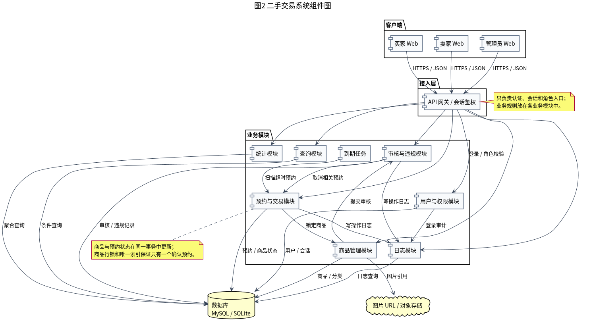
组件图强调了三个设计约束：第一，客户端只通过 API 网关访问业务模块，不直接访问数据库；第二，预约与交易模块要调用商品模块的锁定能力，不能自己改商品表；第三，审核与违规模块在移除商品时要联动预约模块取消相关预约，并统一写日志模块。
| 调用方 | 被调用方 | 交互内容与原因 |
|---|---|---|
| 买家客户端 | 查询模块、预约交易模块 | 查询公开商品、查看详情、发起/取消预约；买家不能调用审核和后台接口 |
| 卖家客户端 | 商品管理模块、预约交易模块、统计模块 | 编辑商品、提交审核、查看自己商品的预约、确认/拒绝/完成；只能操作自己的资源 |
| 管理员客户端 | 审核与违规模块、用户与权限模块、日志模块、统计模块 | 审核商品、违规移除、禁用用户、查询日志和平台统计 |
| 商品管理模块 | 审核与违规模块 | 卖家提交审核后，商品进入审核队列；审核结果回写商品状态 |
| 预约与交易模块 | 商品管理模块、日志模块 | 确认预约时锁定商品行，更新商品为已预订；取消/过期/完成时释放或售出商品；所有状态变化写日志 |
| 审核与违规模块 | 预约与交易模块、日志模块 | 违规移除商品时取消 PENDING/CONFIRMED 预约，避免商品已移除但预约仍有效 |
| 统计模块 | 商品仓储、预约仓储 | 只做聚合查询，不修改业务数据 |
并发确认的详细交互见 3.6 节图 8。设计上要求：买家 A、买家 B 同时对待确认预约发起请求时，卖家确认 A 必须在事务中锁定商品行并更新商品、A 的预约和其他待确认预约；若旧页面提交的 version 不一致，则返回 409，不执行部分写入。
本实验共绘制 9 张 UML 图，覆盖结构性图、行为性图和交互性图三类。类图为必画图；组件图强调模块结构；用例图说明角色权限；商品和预约状态图说明状态机；活动图说明主流程；时序图说明一次具体交互。正文展示 8 张图，完整类图总览作为补充文件保存在 UML/UML类图.png 中。所有图均使用 PlantUML 绘制，源文件和 PNG 保存在 lab2/UML/。
类图分为领域模型、服务与仓储两张。这样做是因为一张包含全部层次的大类图会变得过宽，打印后可读性差；拆成两张后，一张回答“系统中有什么业务对象”，另一张回答“业务逻辑和数据访问如何组织”。完整的类图总览仍保存在 UML/UML类图.png 中，作为仓库中的补充参考。
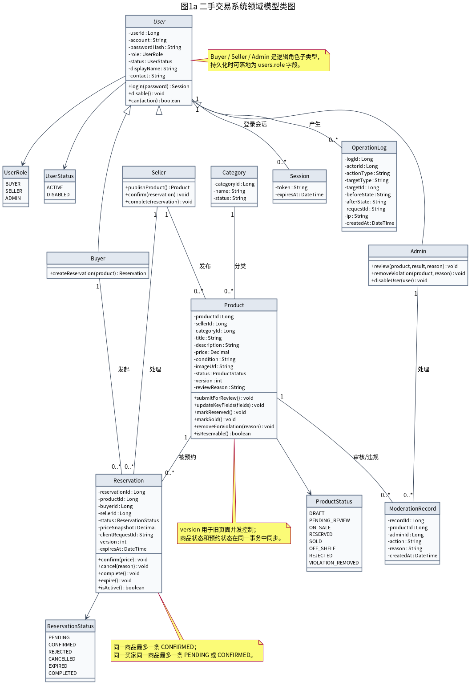
领域模型中的关键关系是：卖家发布商品，分类区分商品；买家发起预约；商品可以有多个预约，但同一商品最多一条已确认预约；审核/违规记录关联商品和管理员；操作日志记录操作者、目标和前后状态。Product.version 和 Reservation.version 用于旧页面并发控制，clientRequestId 用于幂等。
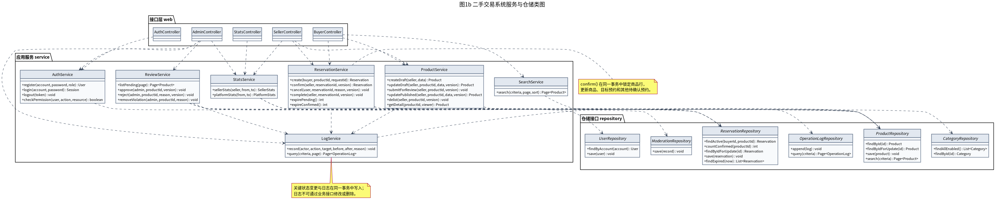
服务与仓储类图体现分层：Controller 只做参数和权限入口，Service 承担业务规则和事务边界，Repository 负责持久化。预约服务同时依赖预约仓储和商品仓储，因为确认预约必须同时修改预约与商品；审核服务和日志服务分开，避免把审计写死在业务对象里。
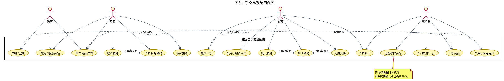
用例图用于确认权限边界：游客只能浏览、搜索和登录；买家可以预约、取消和查看自己的预约；卖家可以发布/编辑商品、提交审核、处理预约、完成交易；管理员负责审核、违规、用户、日志和平台统计。管理员不参与预约和交易，买家/卖家也不能进入后台审核用例。
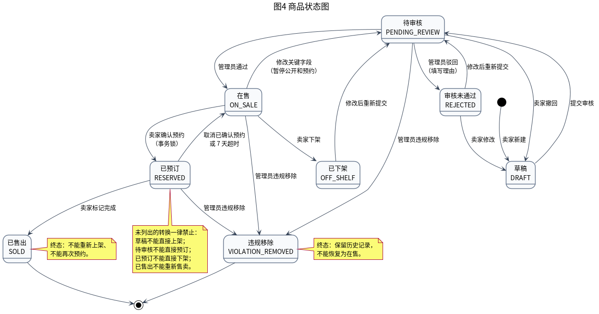
商品状态机明确禁止几条容易出错的操作：草稿不能直接上架；待审核不能直接变为已预订；已预订不能直接下架；已售出不能重新售卖；违规移除是终态。卖家修改已发布商品的关键字段后，商品回到待审核，审核期间暂停公开和预约。
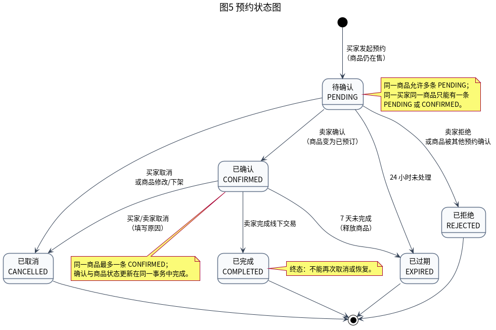
预约状态机区分“待确认”和“已确认”。同一商品可以有多条 PENDING，但最多只有一条 CONFIRMED；同一买家同一商品最多一条 PENDING 或 CONFIRMED。待确认 24 小时未处理自动过期；已确认 7 天未完成自动过期并释放商品。完成、取消、拒绝、过期都是终态。
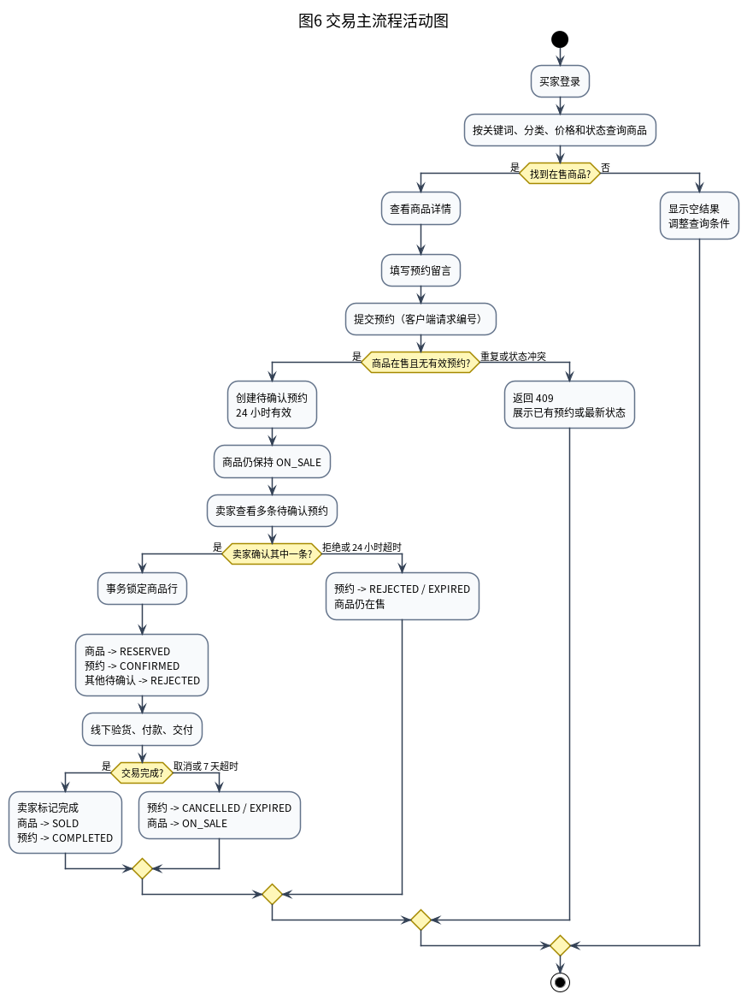
活动图把跨角色的主流程串起来：买家查询商品、提交预约；系统检查商品状态和重复预约；卖家处理多条待确认预约；确认后商品变为已预订；线下交付完成后卖家标记完成。异常分支包括重复/状态冲突、卖家拒绝、24 小时超时和 7 天未完成。
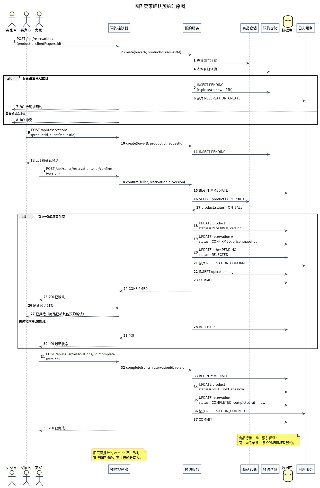
时序图是本设计中最能体现“可落地性”的图。它把 Controller、Service、ProductRepository、ReservationRepository、数据库和日志服务放在同一条时间线上，展示了确认预约的 BEGIN IMMEDIATE、商品行锁、状态更新、其他预约拒绝、日志写入和 COMMIT。旧页面版本冲突时直接 ROLLBACK 并返回 409，避免部分更新。
| 实体 | 关键字段 | 关系与约束 |
|---|---|---|
| User 用户 | user_id、account、password_hash、role、status、display_name、contact | account 唯一；role 为 BUYER/SELLER/ADMIN；status 为 ACTIVE/DISABLED |
| Category 分类 | category_id、name、status | 分类名称唯一；商品必须属于一个分类 |
| Product 商品 | product_id、seller_id、category_id、title、price_cents、condition、status、version | 属于一个卖家和一个分类；version 用于并发控制 |
| Reservation 预约 | reservation_id、product_id、buyer_id、seller_id、status、price_cents、client_request_id、version、expires_at | 关联买家、卖家、商品；请求编号在买家范围内唯一；保存成交价格快照 |
| ModerationRecord 审核记录 | record_id、product_id、admin_id、action、reason | 记录审核通过、驳回、违规移除，保留处理理由 |
| OperationLog 操作日志 | log_id、actor_id、action_type、target_type、target_id、before_state、after_state、request_id、ip | 关键操作留痕，业务接口不可修改或删除 |
CONFIRMED 预约；数据库使用部分唯一索引约束。PENDING 或 CONFIRMED 预约；避免重复点击和重复预约。client_request_id 用于幂等重放；同一请求编号重放返回第一次结果，不重复插入。RESERVED 恢复为 ON_SALE；完成交易时商品变为 SOLD、预约变为 COMPLETED。| 对象 | 允许的关键转换 | 禁止的典型转换 |
|---|---|---|
| 商品 | 草稿→待审核→在售/审核未通过；在售→已预订→已售出；在售→已下架；在售/待审核/已预订→违规移除 | 草稿→在售；待审核→已预订；已预订→已下架；已售出→在售；违规移除→在售 |
| 预约 | 待确认→已确认；待确认→拒绝/取消/过期；已确认→完成/取消/过期 | 待确认→完成；已确认→待确认；终态→有效状态；同一商品两条已确认 |
VIOLATION_REMOVED 状态保留历史；没有把预约和商品状态放在两个独立操作中，而是要求同一事务更新。这样虽然牺牲了一点实现简单性，但能保证日志、预约和管理员处理都可追溯。
UI 设计采用移动端高保真原型，参考闲鱼的信息架构和视觉语言：黄色主色、黑色文字、白色卡片、顶部搜索、双列商品瀑布流、商品详情底部预约操作栏、角色化底部导航。设计稿只参考布局和交互，不使用闲鱼的 Logo、商标、吉祥物或图片素材。
设计尺寸为 390×844，导出为 780×1688 的 2 倍 PNG。HTML/CSS 源文件在 lab2/UI源文件/，导出图片在 lab2/UI界面/。设计稿覆盖登录、商品查询、商品详情、预约、商品管理、审核、违规、用户、日志和统计等主要功能模块。
| 页面 | 角色 | 模块 | 核心交互 |
|---|---|---|---|
| 01 登录注册 | 游客 | 用户与认证 | 登录/注册切换、买家/卖家角色、管理员不开放注册 |
| 02 买家首页 | 买家 | 商品查询 | 搜索、分类、商品瀑布流、底部导航 |
| 03 商品详情 | 买家 | 商品详情/预约 | 查看价格、卖家、描述，发起预约 |
| 04 我的预约 | 买家 | 预约与交易 | 状态筛选、截止时间、取消预约 |
| 05 卖家商品管理 | 卖家 | 商品管理 | 状态统计、编辑、下架、处理预约 |
| 06 商品发布编辑 | 卖家 | 商品管理 | 图片、标题、描述、价格、成色、提交审核 |
| 07 卖家预约处理 | 卖家 | 预约与交易 | 多条待确认预约、拒绝、确认预约 |
| 08 管理员审核 | 管理员 | 审核与违规 | 待审核队列、通过/驳回 |
| 09 管理员违规处理 | 管理员 | 审核与违规 | 违规理由、取消关联预约提示 |
| 10 管理员用户管理 | 管理员 | 用户管理 | 角色/状态筛选、禁用/启用 |
| 11 操作日志 | 管理员 | 日志 | 按操作者、动作、目标、时间筛选 |
| 12 统计看板 | 管理员/卖家 | 统计 | 商品状态、成交率、每日完成交易 |
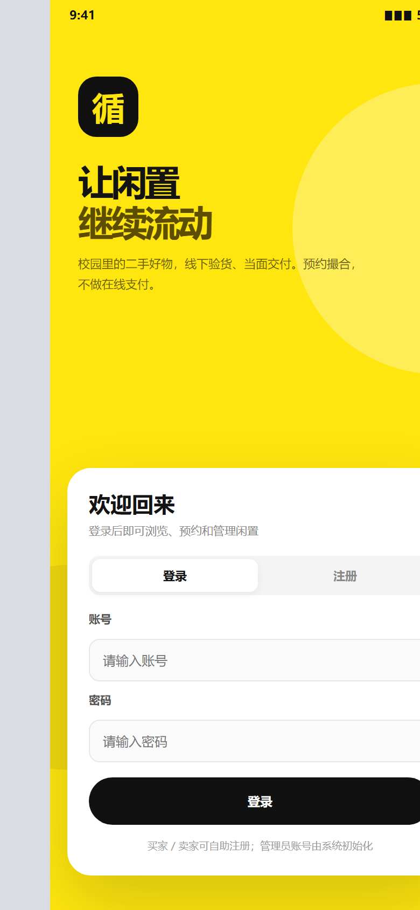
展示品牌信息、登录/注册切换、账号密码输入和管理员账号说明。注册时可选择买家或卖家角色。
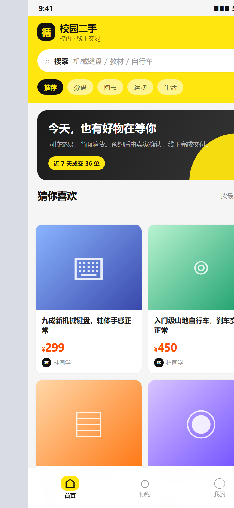
顶部黄色搜索区和分类标签，双列商品瀑布流展示价格、标题、卖家和状态。底部导航只暴露买家可用入口。
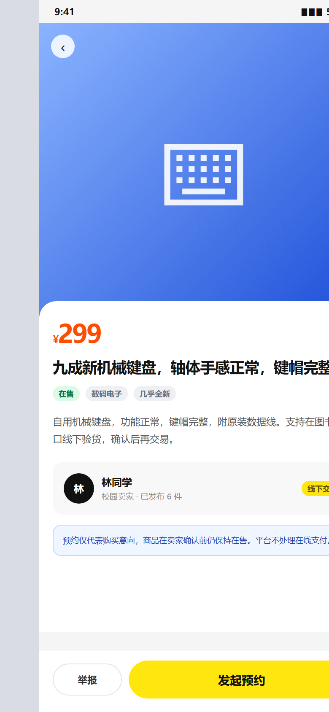
展示商品图片、价格、标题、状态、成色、描述和卖家信息。底部突出“发起预约”，并提示预约不代表付款。
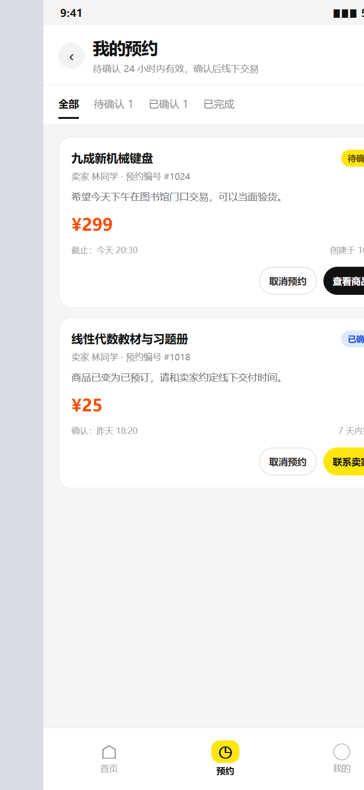
按待确认、已确认、已完成筛选预约；显示截止时间、卖家和商品，待确认和已确认预约可以取消。
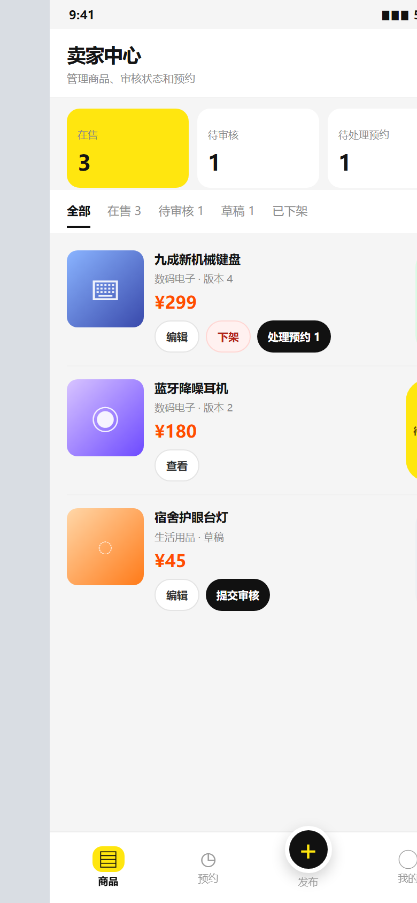
顶部统计在售、待审核和待处理预约；商品列表按状态展示，提供编辑、下架、处理预约等操作。
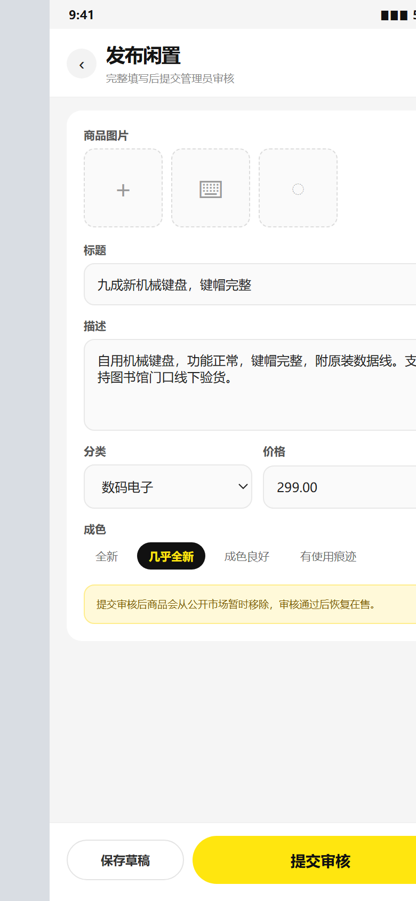
表单包含图片、标题、描述、分类、价格、成色；底部提供保存草稿和提交审核，提交后进入管理员审核。
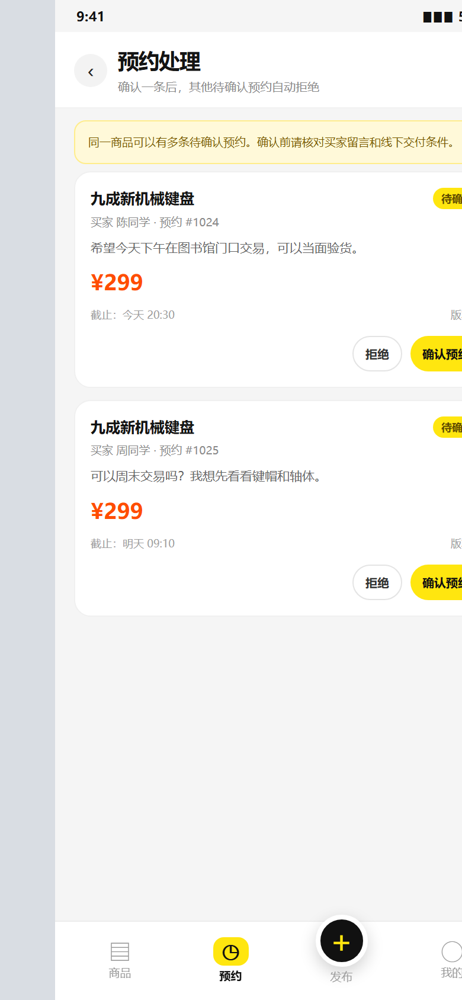
同一商品的多条待确认预约并列展示，包含买家留言、截止时间和价格；卖家可拒绝或确认其中一条。
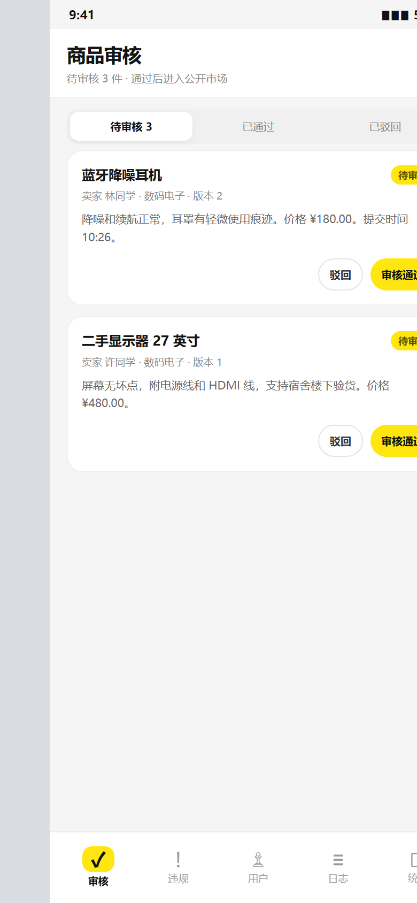
待审核队列展示商品、卖家、分类、价格和描述；管理员可填写理由驳回或审核通过。
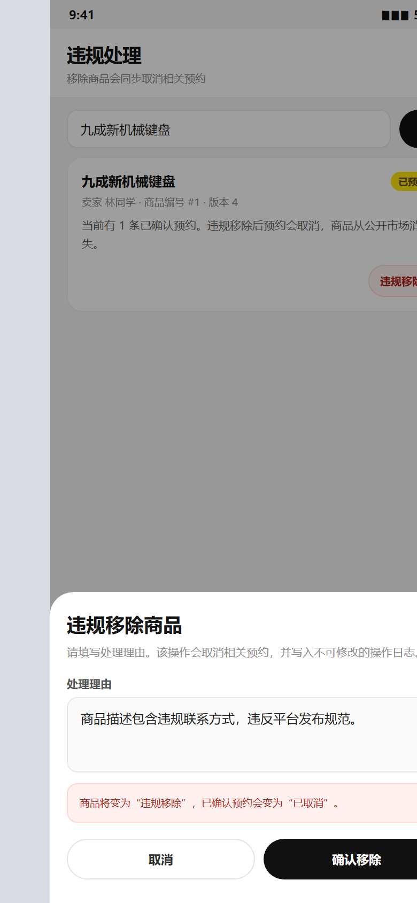
通过商品搜索定位违规商品，底部弹层填写处理理由，并提示将取消相关预约。
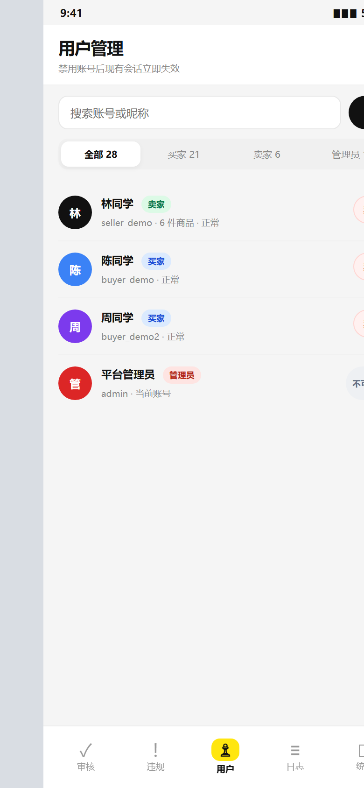
按角色和状态筛选用户，展示账号、昵称、商品数和状态，提供禁用/启用操作。
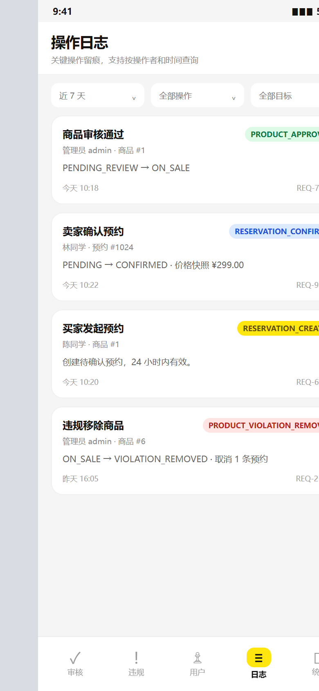
按操作者、操作类型、目标和时间筛选，展示前后状态、请求编号和操作时间。
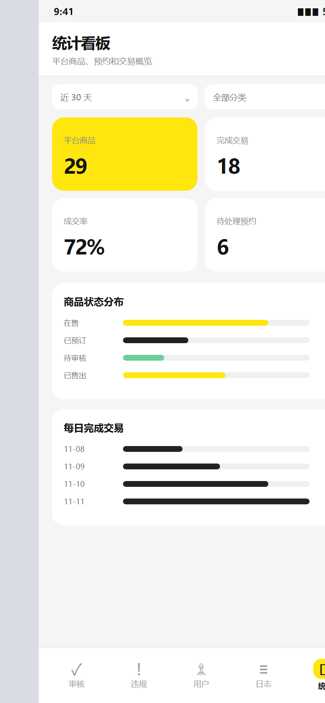
展示平台商品、完成交易、成交率和待处理预约；用条形图展示商品状态和每日完成交易。
本实验使用 AI 工具辅助生成初稿、检查语法和整理报告结构，但不把 AI 输出直接当作最终设计。AI 工具为 Pi Coding Agent，模型为当前运行环境提供的 deepseek-v4-flash。每次使用后都由本人检查：是否符合实验一需求、是否漏掉权限/状态/异常、是否能被 PlantUML 或浏览器正确渲染。
使用场景：根据实验一的 7 个业务模块，生成模块职责和组件依赖的初稿。
生成结果：AI 给出了“客户端—服务端—数据库”的三层划分，但把在线支付、物流和聊天也列进了模块，且模块之间边界较粗。
优点：很快覆盖了主要模块，组件图的格式和连线可以直接作为起点。
局限：没有严格遵守实验一的范围约束，把“管理员审核”和“违规处理”混成一个模块，也没有体现预约交易模块对商品模块的锁定调用。
人工修改：删除支付、物流、聊天等范围外模块；拆出审核与违规、日志、统计；增加“预约交易模块→商品模块：锁定商品”和“违规→取消预约”的交互。
使用场景：根据领域对象和服务划分生成 PlantUML 类图。
生成结果：AI 生成了 User、Product、Reservation、Service、Repository 等类，但把 Payment、Order、Chat 也画进了类图，并缺少 version、clientRequestId、审核记录等关键字段。
优点：类之间的关系基本正确，节省了从零画类图的时间。
局限：模型偏通用电商，没有反映“线下交易、多条待确认、一条已确认、旧页面冲突”的项目特点。
人工修改：删除 Payment/Order/Chat；增加 version、clientRequestId、priceSnapshot、ModerationRecord、OperationLog；把类图拆成领域模型和服务/仓储两张，避免一张图过宽。
使用场景：生成商品/预约状态图和“卖家确认预约”的时序图。
生成结果：AI 的初稿把“预约”写成商品立即锁定，没有体现多条 PENDING、卖家确认后其他预约自动拒绝，也没有旧页面版本冲突。
优点：状态图和时序图的基本语法正确，能快速得到可视化骨架。
局限：遗漏并发和异常分支；如果直接采用，会产生“第一个预约锁死商品”的错误设计。
人工修改：增加 PENDING/CONFIRMED 双状态、24 小时/7 天过期、事务锁、唯一索引、旧页面 409；在时序图中加入 BEGIN IMMEDIATE、ROLLBACK 和其他预约自动拒绝。
使用场景：参考闲鱼的移动端风格，为 12 个页面生成布局和文案初稿。
生成结果：AI 最初生成的是偏桌面后台的卡片布局，信息密度高、角色入口混杂；颜色和按钮也不统一。
优点：能快速给出搜索、瀑布流、商品详情、审核列表等页面的结构建议。
局限：没有体现移动端底部导航、角色隔离和商品状态反馈；如果直接使用，页面会像管理后台而不是二手交易产品。
人工修改：改成 390×844 移动端；统一黄色/黑色/白色设计系统；按买家、卖家、管理员分别设计底部导航；补充状态标签、取消/确认弹层、预约截止时间、违规理由等业务信息。
使用场景：根据实验二要求整理报告目录和 AI 使用章节的写法。
生成结果：AI 给出了“项目概况—架构—UML—UI—AI—总结”的目录，但 AI 章节初稿只写了“AI 很高效”，没有具体修改过程和局限。
优点：目录覆盖了任务书要求，节省了结构整理时间。
局限：容易写成空泛的优缺点，没有体现“人如何判断和修改”的证据。
人工修改：按“场景—生成结果—优点—局限—人工修改”组织每次使用；补充“AI 可能扩大范围”“AI 会遗漏并发和边界”的具体例子；增加“人只做校对是否可行”的分析。
部分可以，但不能完全做到。AI 很适合做“生成初稿”和“重复性检查”：生成 PlantUML 骨架、检查语法、导出截图、检查文件名和目录、根据模板生成报告结构。这些工作可以形成一条工作流：
但是“人只做检查校对”仍然有风险。架构选择、状态语义、权限边界、UI 信息层级和验收标准都需要人的判断；AI 可能把在线支付、单条预约、错误状态转换写得很自然。人如果只看排版，很容易把错误设计“校对通过”。更合理的定位是：AI 负责生成和检查，人负责决策和验收；人的工作从“从零生产”变成“提出约束、比较方案、验证结果”。
对于本课程项目，最有效的方式是让 AI 生成结构化的初稿，人保留需求追踪表和自己的设计理由。这样即使 AI 生成的某张图被替换，设计决策仍然可以解释。
第一，实验一的需求较多，状态和异常相互牵连。把 29 条需求压缩成模块时，很容易把“商品审核”“违规移除”“预约取消”混在一起。解决方法是先建立模块—需求映射表，再为商品和预约分别画状态图，最后用时序图验证并发确认。
第二，类图容易画成“通用电商”。AI 初稿加入了支付、订单和聊天，但这些都在实验一范围之外；它还漏掉了版本号和请求编号。解决方法是以实验一的范围和异常规则为准，删除范围外类，补上 version、clientRequestId、priceSnapshot 和日志类。
第三，UML 图的可读性问题。完整类图导出后非常宽，直接放进 A4 报告会看不清。解决方法是将类图拆成领域模型和服务/仓储两张，完整总览保留为附录；宽图在报告中尽量使用整页宽度，并配合文字说明。
第四，UI 设计和实际运行系统之间的差异。运行系统是功能原型，实验二需要的是设计稿；直接截桌面页面会失去移动端交易产品的信息层级。解决方法是单独制作 390×844 的移动端高保真设计稿，参考闲鱼的搜索、瀑布流和底部导航，但不复制其品牌素材。
后续实现阶段可以在本设计基础上继续补充：商品图片上传、消息通知、评价、举报处理、管理端审核历史、统计导出等。支付、物流、聊天等范围外能力如果加入，需要重新做需求变更和状态设计，不能直接塞进现有模块。
| 项目 | 校园 / 社区二手交易系统 |
| 公开仓库 | https://github.com/xxxhz3927698/lab1 |
| UML / UI 设计提交 | f21d4fd（PlantUML 架构与状态模型）5f73fcf（闲鱼风格高保真 UI 设计稿） |
| UML 目录 | lab2/UML/，包含 9 组 .puml 和 .png |
| UI 目录 | lab2/UI界面/，包含 12 张 PNG；源文件在 lab2/UI源文件/ |
| 提交包 | 实验报告.pdf、UML/、UI界面/ |
app/ 目录中，用于验证状态机、权限和并发规则，不作为实验二提交的主体。